原视频：Bilibili · BV1hNdhB1Efe（时长约 86 分钟） 课程：南京大学《操作系统原理》（2026）第 14 讲 整理说明：本书由视频语音转录后经 AI 重构而成；口语已转为书面语；关键时间点标注 (参考时间)，截图占位对应视频位置。
1. 操作系统里最早的并发
(参考时间: 00:00)
上讲用线程库打开「魔鬼盒子」：只靠共享内存甚至做不对 1+1。本讲补上互斥。
为何 OS 课必须讲并发？UNIX 进程本身地址空间隔离，但进程在内核中执行系统调用的部分共享内核数据结构——一旦 syscall 在多个 CPU 上同时改同一文件/同一结构，问题与用户态 sum++ 同构。操作系统是人类最早、规模最大的严肃并发程序。
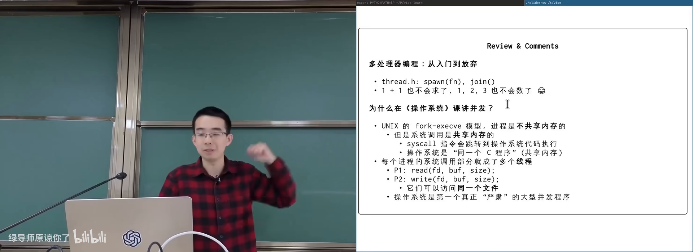
进程内核路径也是并发的在 B 站打开 (00:02:30)
1.1 直觉目标：make it work
把关键代码包进一个「要么全做完，要么像没发生」的块：
- 读 sum、加一、写回，作为一个整体；
- 不允许另一线程插进中间。
这几乎是 事务内存（transactional memory，把一段共享内存更新做成原子提交的机制）的想法。Intel 曾加 xbegin/xend 一类指令，消费级平台现多不可见；ARM 也曾尝试后放弃——指令集代价大。
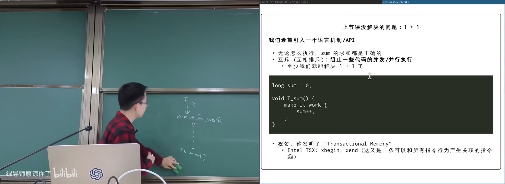
make it work / 事务块示意在 B 站打开 (00:04:50)
flowchart LR
A["sum++ 分解: load"] --> B["tmp+1"]
B --> C["store"]
C --> D["若被打断则交错错误"]
A -.->|"make it work 包住"| E["整体成功或整体未发生"]
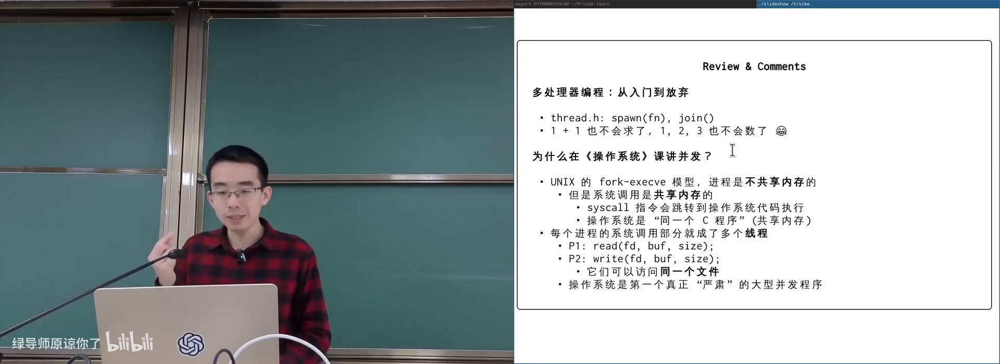
操作系统的并发来源：syscall 被中断在 B 站打开 (00:01:30)
图：可关注两个进程的内核路径可能同时碰同一文件。
2. 单处理器内核：关中断
(参考时间: 00:06:30)
若系统只有 一个 CPU 且代码在 内核态：关中断即可 make it work——没有其他线程能抢 CPU（在中断关闭窗口内）。若窗口内死循环，整机假死（这也是早期 Windows 蓝屏/复位故事的背景）。
用户态尝试关中断（如 x86 cli）会被拒绝：SIGSEGV / illegal instruction。内核用特权指令清除中断标志位。
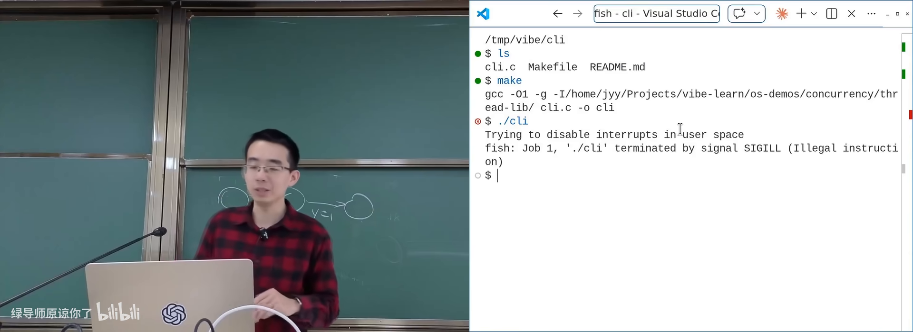
关中断演示：用户态失败/内核独占在 B 站打开 (00:09:30)
关中断/开中断可抽象为「进入临界 / 离开临界」，推广到多处理器就是互斥 API。
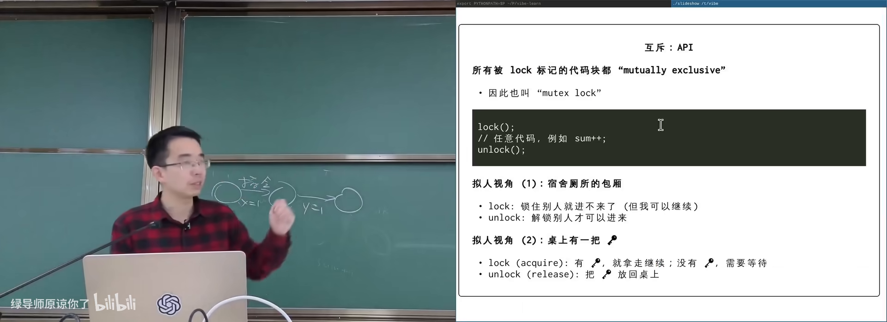
临界区抽象：关中断推广到 lock/unlock在 B 站打开 (00:10:20)
3. 互斥锁：lock/unlock
(参考时间: 00:10:30)
互斥（mutually exclusive，多个执行流不能同时进入同一临界区）用一对操作表达：
lock/acquire：获得锁；若已被他人持有则等待；unlock/release：释放锁；并保证此前对共享内存的写对后续获得锁的线程可见。
时间轴上：T1 在 lock 返回后执行临界区直到 unlock；期间 T2 的 lock 不返回；T1 unlock 后 T2 才能进入。
3.1 两个好用的比喻
- 单人房间：进门上锁，别人进不来；离开开锁。
- 桌上一把钥匙：lock=拿钥匙，unlock=还钥匙；钥匙只有一把。
正确使用时，可把 lock…unlock 理解成 stop the world（理解程序时假装世界暂停，自己独占共享状态）——这是人脑友好的顺序化视角；真实执行仍可能并行，只要别人不碰你锁保护的数据。
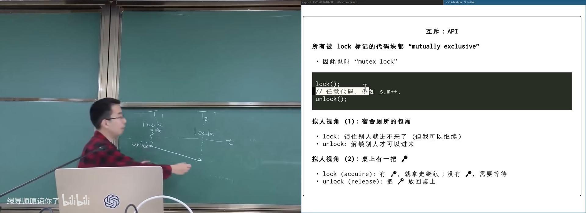
lock/unlock 时间轴在 B 站打开 (00:12:00)
图：可关注 T2 的 lock 必须等 T1 unlock。
sequenceDiagram
participant T1
participant Lock as 钥匙
participant T2
T1->>Lock: lock / acquire
Note over T1: 临界区 sum++
T2->>Lock: lock（等待）
T1->>Lock: unlock / release
Lock->>T2: 获得钥匙
Note over T2: 临界区 sum++
T2->>Lock: unlock
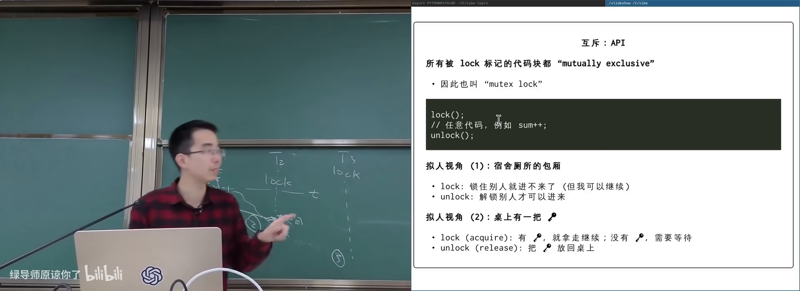
钥匙比喻：acquire/release在 B 站打开 (00:14:20)
图：可关注「桌上一把钥匙，谁拿到谁能进」。
3.2 多把锁
不同共享变量可用不同锁（lockA 保护 x，lockB 保护 y）。同一变量的所有访问必须同一把锁——两把名字相近的锁（l 与 i）形同虚设。
4. 正确使用与「一把大锁」
(参考时间: 00:17:10)
用课程线程库 thread_sync.h 可创建互斥锁，把 N 次 sum++ 包进 lock/unlock（中间可插 compiler barrier 防止被优化成一次加 N），运行结果正确。
4.1 心智负担与细粒度锁
lock/unlock 必须程序员配对；返回路径漏 unlock 就会永久卡死他人。细粒度并发链表要对节点逐个上锁：遍历时先持有当前节点锁，再拿后继节点锁，再放前驱……插入删除要三把锁，删除后的内存回收更难。
课程建议第一次写并发：能一把大锁就一把大锁——凡可能共享的数据都用同一把锁，临界区覆盖整件事。Linux 多处理器化时先引入 BKL（Big Kernel Lock，大内核锁），正确优先，再按瓶颈拆细。
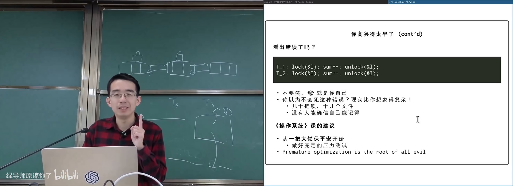
一把大锁 vs 细粒度锁在 B 站打开 (00:29:00)
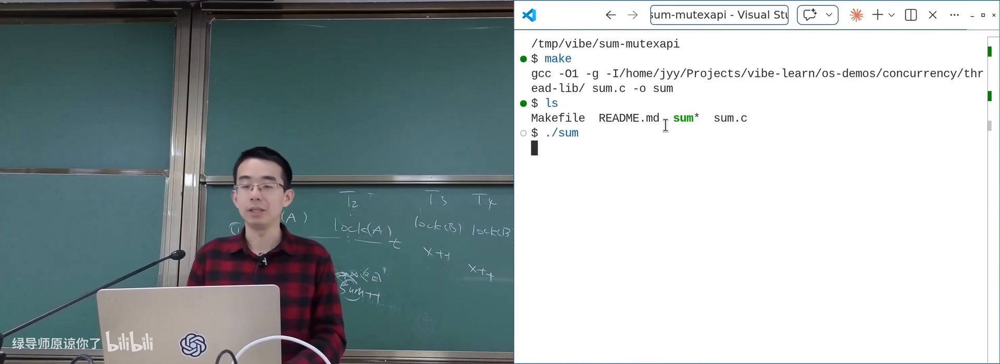
sum.c：lock 保护多次 sum++在 B 站打开 (00:19:00)
图：可关注临界区内多次自旋/加法仍得到正确 sum。
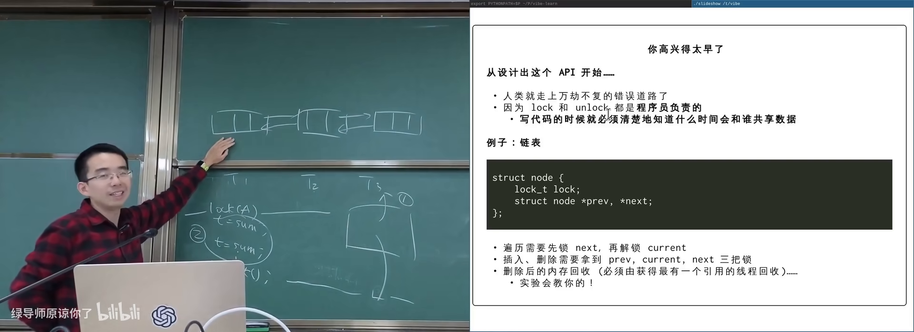
链表细粒度锁：边遍历边上锁在 B 站打开 (00:26:00)
图：可关注 previous/current/next 三节点锁的交接。
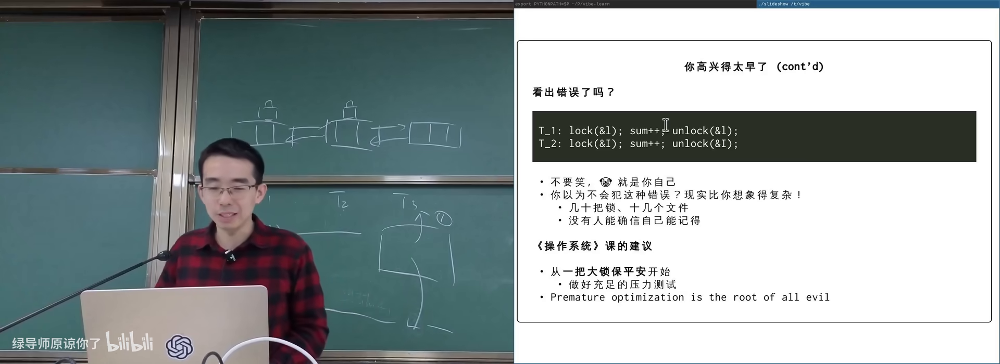
l 与 i 混用两把锁的反例在 B 站打开 (00:28:00)
图：可关注「看似同一把锁」的拼写错误。
4.2 Amdahl 与 Gustafson
疑问：上锁是否毁掉并行？
- Amdahl 定律：若串行占比不可忽略，加速比有上限；
- Gustafson：串行极少、并行区可扩展时，多核可接近线性加速。
现实大量问题有局部性：计算网格各自内部算，只在边界交互；图书馆借书时才共享书架，拿到书后阅读是私有。互斥只包住「真正共享的瞬间」。
5. 历史算法与现代实现（导读）
(参考时间: 00:39:00)
1965 年起出现公开的正确双进程互斥算法（如 Dekker）；表述常像绕口令：「若对方不想进则可进；否则只在轮到自己时进」。1981 年的 Peterson 算法 等更简洁，但仍需在内存模型下仔细论证。
课程提供可视化/论文导读链接，指出：在共享内存上实现互斥，人类探索了很长时间，论文里也曾出现「作者自以为不对其实对」的轶事。
现代用户态库通常：
- 原子指令（test-and-set、compare-and-swap 等）实现快速路径；
- futex 等系统调用实现等待/唤醒慢速路径，避免纯忙等。
细粒度锁、原子指令与内存序是后续深入内容；本讲目标是先建立正确的使用模型。
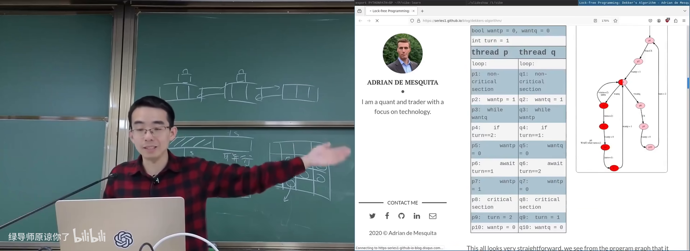
Decker/Peterson 状态空间示意在 B 站打开 (00:40:30)
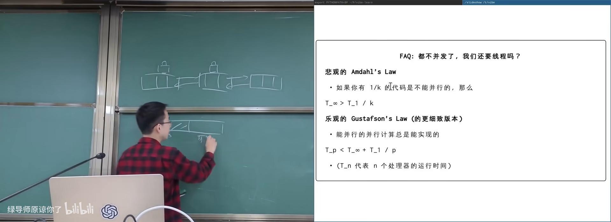
Amdahl：串行占比限制加速比在 B 站打开 (00:33:30)
图：可关注不可并行部分成为瓶颈。
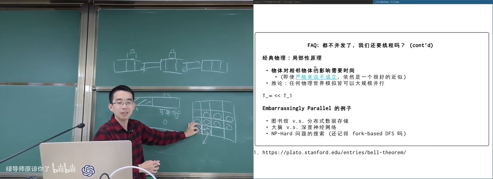
Gustafson：大规模下并行占比上升在 B 站打开 (00:36:30)
图：可关注问题规模变大时接近线性扩展。
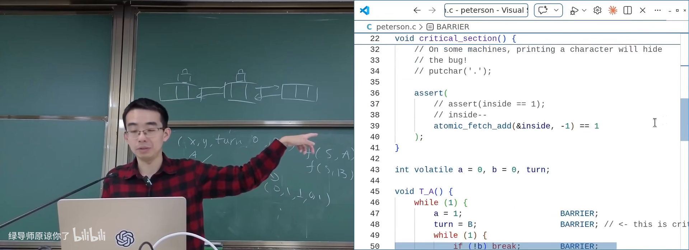
原子指令与 futex 快慢路径示意在 B 站打开 (00:55:00)
图：可关注无竞争时 CAS，有竞争时陷入内核等待。
附录：概念补给
互斥（mutual exclusion）
- 是什么：同一时刻至多一个执行流进入临界区的性质/机制。
- 课上为何出现：解决共享数据被交错破坏。
- 和什么像：单人卫生间门锁。
临界区（critical section）
- 是什么：访问共享可变数据、需要互斥的那段代码。
- 课上为何出现：lock/unlock 包围的范围。
- 和什么像：必须锁门才能进入的档案室。
lock/unlock（acquire/release）
- 是什么：获得/释放互斥锁的 API。
- 课上为何出现：并发控制最基础原语。
- 常见误解：unlock 还带内存可见性语义，不只是「计数减一」。
stop the world（理解视角）
- 是什么：把正确加锁的临界区在推理时当成世界暂停。
- 课上为何出现：让顺序思维重新适用。
- 常见误解：不是指实现上真的停止所有核。
BKL（Big Kernel Lock）
- 是什么：Linux 早期多处理器支持用的一把大内核锁。
- 课上为何出现：说明「先正确再拆分」的工程路径。
- 和什么像：全楼共用一把大门锁，安全但拥挤。
事务内存（transactional memory）
- 是什么：让一段内存更新像数据库事务一样 all-or-nothing 的机制。
- 课上为何出现：make it work 的理想形式。
- 常见误解：与 malloc/文件 IO 混用极难，尚未成为通用默认方案。
Amdahl 定律
- 是什么：并行加速受限于程序中不可并行比例。
- 课上为何出现：回答「上锁是否毁掉多核」。
- 和什么像：结账只开一个柜台时，多雇导购也快不了太多。
Gustafson 定律
- 是什么：问题规模随核数增大时，串行占比可被压得很小。
- 课上为何出现：乐观并行的工程含义。
- 和什么像：货越多越值得多开卸货口。
一把大锁保平安
- 是什么：用单一锁保护全部共享状态的正确性优先策略。
- 课上为何出现：课程给初学者的明确建议。
- 常见误解：不是永远不要细粒度，而是先对再快。
futex
- 是什么：用户态锁慢路径依赖的内核等待/唤醒原语之一。
- 课上为何出现：现代 lock 如何避免纯自旋。
- 和什么像：没钥匙时先睡着，有人还钥匙再叫醒你。
Peterson / Dekker 算法
- 是什么：仅用共享变量与有限硬件假设实现双进程互斥的经典软件算法。
- 课上为何出现：历史正确性探索；现代实现的思想源头。
- 常见误解：不能直接当作现代多核默认锁实现。
书架 Shelf 流水线生成 · 内容衍生自 B 站公开课程视频 BV1hNdhB1Efe